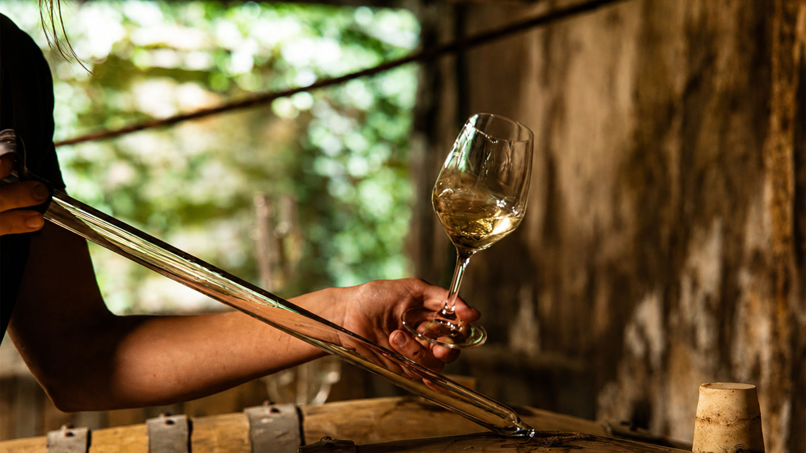
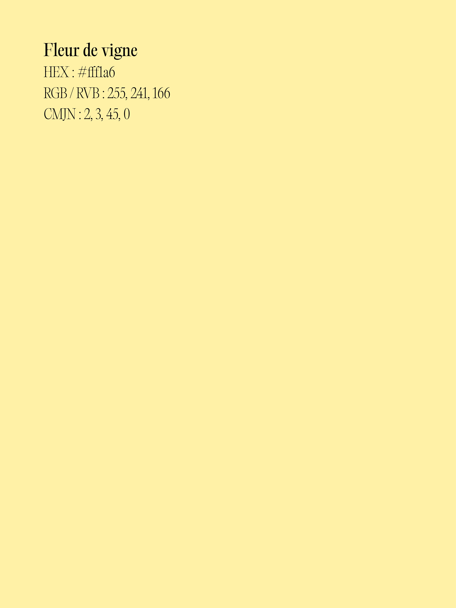
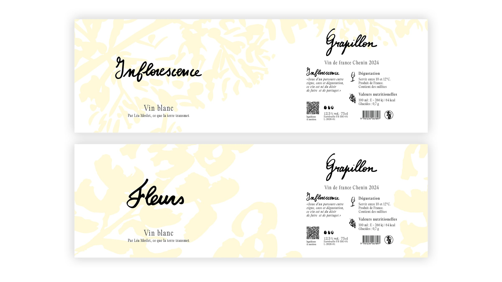
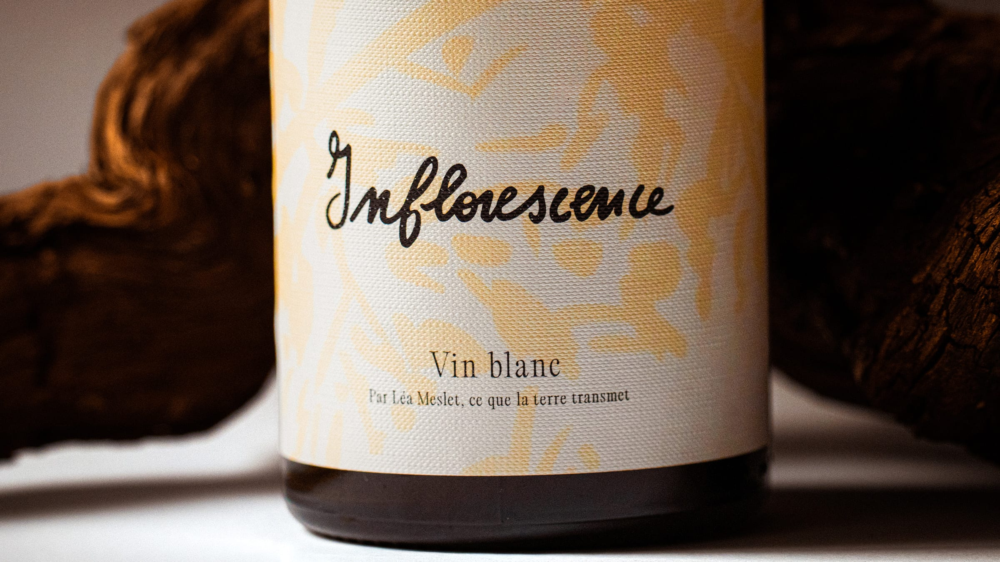
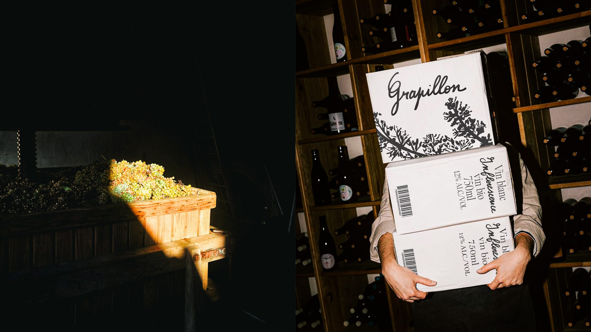

Grapillon
Grapillon
Identité visuelle de Grapillon, une marque de vin née à Bonnezeaux du geste de Léa Meslet, qui sélectionne ses raisins parcelle par parcelle et les vinifie de façon artisanale.

Fondée par Léa Meslet à Bonnezeaux, Grapillon tient sa singularité de sa démarche : Léa ne cultive pas la vigne mais choisit ses raisins dans des parcelles sélectionnées, puis les vinifie
elle-même, cuvée après cuvée. L'identité devait traduire cette approche sensible et libre, à mi-chemin entre l'artisanat et l'instinct : une identité incarnée et poétique, à l'image de celle qui la porte.
- Année
- 2026
- Client
- Grapillon, Léa Meslet
- Disciplines
- Identité visuelle, Direction artistique, Packaging, Photographie

La Typographie
L'identité repose sur un dialogue entre deux écritures.
Le logotype et les titres de chaque cuvée sont manuscrits :
Léa Meslet les écrit elle-même, à la main, pour chaque étiquette.
Il ne s'agit pas d'une typographie créée à partir de son écriture, mais bien de son geste réel, rejoué à chaque cuvée sa signature, son artisanat, jamais figés dans une police.
Face à cette main, la PP Editorial Old (Pangram Pangram) :
un serif à fort contraste dont les déliés et empattements fins évoquent les sarments et les vrilles de la vigne.
Rigoureuse, lisible, intemporelle, elle structure le reste du système graphique.
L'une est vivante et changeante, l'autre stable et intemporelle ; ensemble, elles traduisent ce qu'incarne le domaine :
un vin bio qui tient autant de la rigueur du terroir
que de la sensibilité de celle qui le fait.




Les illustrations
Elles prolongent le geste manuscrit du logotype.
Le trait, vif et imparfait, raconte le travail de la main :
tailler, récolter, presser, servir. Là où la photographie fige le réel, le dessin en garde le mouvement et la sensibilité.
Ces motifs irriguent l'ensemble du système, de l'étiquette au packaging, et inscrivent partout la présence
de celle qui fait le vin.



